리눅스마스터-2급 (2017-03-11 기출문제)
1과목: 리눅스 운영 및 관리
1. 다음 중 파일의 허가권(Permission)을 확인 할 수 있는 명령으로 알맞은 것은?
- chgrp
- chown
- chmod
- ls
(정답률: 67%)

2. 다음 중 사용자 user, 그룹 test1 소유인 디렉터리 /home/user를 포함하여 하위 디렉터리 및 파일의 소유자를 ihd로 변경하려고 할 때 ( 괄호 ) 안에 들어갈 옵션으로 알맞은 것은?
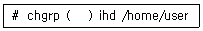
- -f
- -c
- -R
- -h
(정답률: 82%)
3. 다음 ( 괄호 ) 안에 들어갈 내용으로 알맞은 것은?
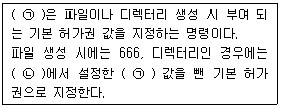
- ㉠ chmod ㉡ 644
- ㉠ chown ㉡ 644
- ㉠ chmod ㉡ 755
- ㉠ umask ㉡ 777
(정답률: 82%)
4. 다음 설명과 관련 있는 특수 권한으로 알맞은 것은?
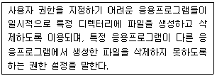
- Set-UID
- Set-GID
- Sticky-Bit
- UUID
(정답률: 69%)
5. 다음 ( 괄호 ) 안에 들어갈 내용으로 알맞은 것은?
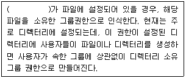
- Set-GID
- Set-UUID
- Set-UID
- Sticky-Bit
(정답률: 78%)
6. /dev/sda2 파티션을 ext4 파일 시스템으로 생성하려고 한다. 다음 ( 괄호 ) 안에 들어갈 내용으로 틀린 것은?
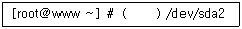
- mke2fs -t ext4
- mkfs -t ext4
- mke2fs -j
- mkfs.ext4
(정답률: 65%)
7. 다음 중 디스크의 사용 가능한 용량을 확인 할 때 사용하는 명령어로 알맞은 것은?
- df
- du
- free
- fdisk
(정답률: 64%)
8. 다음에서 설명하는 파일 시스템의 종류로 알맞은 것은?
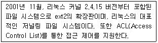
- ext
- ext3
- ext4
- xfs
(정답률: 84%)
9. 다음 중 파일시스템을 검사하고 수리하는 명령으로 알맞은 것은?
- mount
- umount
- eject
- fsck
(정답률: 83%)
10. 다음 중 fdisk 실행 시 주요 명령에 대한 설명으로 알맞은 것은?
- q 명령은 변경된 파티션의 정보를 저장하지 않고 종료한다.
- t 명령은 파티션을 삭제 한다.
- d 명령은 파티션을 추가 한다.
- s 명령은 현재 파티션의 정보를 출력한다.
(정답률: 63%)
11. 다음 중 리눅스에 기본 탑재되어 있고 본 셸(Bourne shell)을 대체하는 셸(Shell)로 알맞은 것은?
- Z shell
- Korn shell
- C shell
- Bash Shell
(정답률: 83%)
12. 다음 설명과 관련 있는 셸(Shell) 종류로 알맞은 것은?
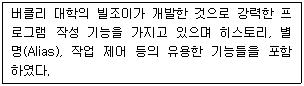
- tcsh
- csh
- ksh
- zsh
(정답률: 74%)
13. 다음 중 셸 환경에서 명령어의 일부 글자만 입력해도 나머지 부분을 자동으로 완성시켜주는데 사용하는 명령으로 알맞은 것은?
- [Enter] 키
- [Tab] 키
- [Shift] 키
- [Home] 키
(정답률: 87%)
14. 셸(shell)은 운영 체제 상에서 다양한 기능과 서비스를 구현하는 인터페이스를 제공하여 사용자의 명령을 실행하고 그 결과를 출력하는 것이다. 다음 ( 괄호 ) 안에 들어갈 내용으로 알맞은 것은?
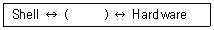
- Kernel
- Bash
- Application
- User
(정답률: 81%)
15. 다음 중 셸 환경변수에 관련 설명으로 틀린 것은?
- PATH : 실행할 명령어를 탐색하는 경로
- SHELL : 로그인 셸에 대한 경로
- TMOUT : 입력 여부와 상관없이 설정된 시간이 지나면 무조건 연결이 종료됨
- HOME : 홈 디렉터리에 대한 경로
(정답률: 63%)
16. 다음 중 명령의 개수로 히스토리 크기를 설정하는 환경변수로 알맞은 것은?
- HISTORYSIZE
- HISTSIZE
- HISTFILESIZE
- HISTCOUNT
(정답률: 68%)
17. 다음 중 히스토리에 저장된 명령어 목록에서 마지막에 사용한 명령을 실행하는 방법으로 알맞은 것은?
- !last
- !?
- !1
- !!
(정답률: 80%)
18. 다음 ( 괄호 ) 안에 들어갈 내용으로 알맞은 것은?
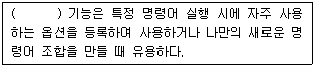
- I/O redirection
- pipe
- alias
- history
(정답률: 84%)
19. 다음 중 프로세스 실행 시에 할당되는 번호를 뜻하는 것으로 알맞은 것은?
- CID
- IDC
- IDP
- PID
(정답률: 87%)
20. tail -f /var/log/syslog 명령어로 실행중인 프로세스를 백그라운드 프로세스로 관리하려고 한다. 다음 중 프로세스를 대기시키기 위해 사용 할 수 있는 인터럽트 키 조합으로 알맞은 것은?
- [Ctrl]+[b]
- [Ctrl]+[c]
- [Ctrl]+[z]
- [Ctrl]+[d]
(정답률: 74%)
21. 실행 중인 작업의 상태가 다음과 같을 때 Suspend(Stopped) 상태인 작업번호 2번인 프로세스를 다시 메모리에 적재하여 실행하는 방법으로 틀린 것은?
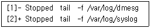
- fg
- bg 2
- fg 2
- fg 1+1
(정답률: 46%)
22. 다음 중 프로세스에 관한 설명으로 틀린 것은?
- init 는 PID가 1이다.
- exec는 원래 프로세스의 메모리에 새로운 프로세스의 코드를 덮어씌운다.
- PPID는 부모 프로세스이다.
- 하나의 프로세스가 다른 프로세스를 실행하기 위해 fg와 bg를 사용한다.
(정답률: 62%)
23. 다음 중 SIGTSTP 시그널이 의미하는 것으로 알맞은 것은?
- Foreground로 실행 중이던 Process가 종료되었다.
- Background로 실행 중이던 Process가 종료되었다.
- Foreground로 실행 중이던 Process가 Suspend로 전환되었다.
- [Ctrl]+[\] 입력 시에 보내지는 시그널이다.
(정답률: 68%)
24. 실행 중인 프로세스의 정보를 트리 구조로 출력해주며, 각 프로세스 ID 값을 출력하는 명령어로 알맞은 것은?
- pstree -a
- ps -tree -h
- ps -tree -n
- pstree -p
(정답률: 59%)
25. 다음 중 kill -1 %2 명령어를 입력한 상황을 설명한 것으로 알맞은 것은?
- PPID가 2번인 프로세스에 재시작 요청을 한번 보낸다.
- jobs 명령으로 출력되는 2번 작업에 hangup signal을 보낸다.
- PID가 20~29번에 해당하는 프로세스에 Z 상태를 찾아서 강제종료 요청을 보낸다.
- jobs 명령으로 출력되는 우선순위 상위 2개의 작업을 하나로 모아서(파이프) 처리 해 준다.
(정답률: 49%)
26. 다음 중 프로세스의 우선순위와 가장 관련이 없는 명령어는 ?
- ps
- pstree
- top
- nice
(정답률: 56%)
27. 다음 중 nohup 명령어에 대한 설명으로 틀린 것은?
- 사용자가 로그아웃하거나 작업 중인 터미널 창이 닫혀도 실행중인 프로세스를 백그라운드 프로세스로 작업 될 수 있도록 해주는 명령이다.
- 실행한 명령을 자동으로 백그라운드로 보내지 않고, 사용자가 명령행 뒤에 '&&'를 명시해야한다.
- 실행중인 프로세스의 표준 출력과 에러는 'nohup.out' 라는 파일을 생성하여 기록한다.
- 작업 디렉터리에 쓰기가 불가능할 경우 '$HOME/nohup.out' 파일을 자동으로 생성하여 기록한다.
(정답률: 68%)
28. 다음과 같이 설정된 crontab 파일에 대한 설명으로 알맞은 것은?(문제 오류로 실제 시험에서는 전항 정답 처리 되었습니다. 여기서는 1번을 누르면 정답 처리 됩니다.)
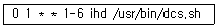
- 월-금요일마다 오전 1시 정각에 /usr/bin/dcs.sh를 실행한다.
- 1월-6월 사이 오전 1시 정각에 /usr/bin/dcs.sh를 실행한다.
- 월-금요일마다 매시간 1분 0초에 /usr/bin/dcs.sh를 실행한다.
- 1월-6월 사이 매시간 1분 0초에 /usr/bin/dcs.sh를 실행한다.
(정답률: 80%)
29. 다음 중 리눅스에서 사용하는 편집기의 종류로 틀린 것은?
- vi
- pico
- emacs
- evince
(정답률: 80%)
30. 다음 보기에서 설명하는 에디터로 알맞은 것은?
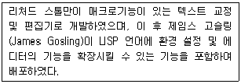
- nano
- vi
- pico
- emacs
(정답률: 74%)
31. 다음 보기에서 설명하는 에디터를 만든 사람으로 알맞은 것은?
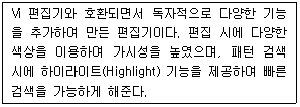
- 브람 무레나르(Bram Moolenaar)
- 제임스 고슬링(James Gosling)
- 아보일 카사르(Aboil Kasar)
- 빌 조이(Bill Joy)
(정답률: 67%)
32. 다음 중 emacs 에디터 단축키 조합의 설명으로 틀린 것은?(문제 실제 시험에서는 전항 정답 처리 되었습니다. 여기서는 3번을 누르면 정답 처리 됩니다.)
- [ctrl] + [c] : emacs를 종료한다.
- [ctrl] + [s] : 편집된 내용을 저장한다.
- [ctrl] + [f] : 새문서 작업을 위해 새로운 파일명을 지정하고 편집한다.
- [ctrl] + [j] : 행의 끝을 나란히 맞춘다.
(정답률: 77%)
33. 다음 중 vi 편집에서 현재 커서가 위치한 곳의 줄을 삭제하는 명령으로 알맞은 것은?
- p
- dd
- yy
- x
(정답률: 77%)
34. 다음 중 전체 7줄로 이루어진 문서를 vi 편집기를 이용하여 fail이라는 문자열 모두를 success로 치환하려고 할 때 알맞은 것은?
- :1,7 s/fail/success/g
- :$ s/fail/success/g
- :7,1 s/fail/success/g
- :1,7 %s/fail/success/g
(정답률: 51%)
35. 다음에서 설명하는 소스 설치법 단계로 알맞은 것은?
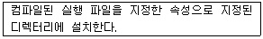
- configure
- make
- make install
- make test
(정답률: 73%)
36. 다음 중 cmake의 특징으로 틀린 것은?
- 평행 빌드를 지원한다.
- 타임스탬프를 통해 파일 내용의 변화를 알 수 있다.
- 크로스 컴파일은 지원되지 않는다.
- 마이크로소프트 Visual Studio .Net을 지원한다.
(정답률: 65%)
37. 다음 중 tar가 지원하는 압축 형식으로 틀린 것은?
- compress
- gzip
- bzip2
- xv
(정답률: 69%)
38. vsftpd 패키지의 검증결과가 다음과 같을 때 관련 설명으로 틀린 것은?
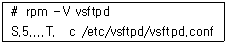
- vsftpd.conf 파일의 크기가 변경 되었다.
- vsftpd.conf 파일의 메시지 다이제스트 값이 변경 되었다.
- vsftpd.conf 파일의 수정 시간이 변경 되었다.
- vsftpd.conf 파일의 소유자가 변경 되었다.
(정답률: 50%)
39. 다음 중 apt-get명령어가 의존성과 충돌성 해결을 위해 참조하는 파일명으로 알맞은 것은?
- /var/cache/archive
- /var/cache/apt/archive
- /etc/apt/sources.list
- /etc/sources.list
(정답률: 61%)
40. 다음의 조건에 맞는 압축 명령으로 알맞은 것은?
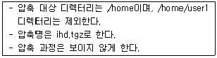
- tar zxvf ihd.tgz /home --exclude-dir /home/user1
- tar zxf ihd.tgz /home --exclude-dir /home/user1
- tar zcvf ihd.tgz /home --exclude /home/user1
- tar zcf ihd.tgz /home --exclude /home/user1
(정답률: 54%)
41. 다음 중 yum 명령어의 옵션에 대한 설명으로 틀린 것은 ?
- list : 전체 패키지에 대한 정보를 출력한다.
- info :패키지에 대한 정보를 출력한다.
- install : 패키지를 설치할 때 사용한다. 의존성이 걸린 패키지는 설치되지 않는다.
- groupinfo : 해당 패키지 그룹명과 관련된 패키지의 정보를 보여준다.
(정답률: 63%)
42. 다음 설명에 해당하는 도구로 알맞은 것은?
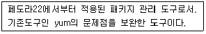
- apt-get
- dnf
- pip
- yast
(정답률: 38%)
43. 다음 ( 괄호 ) 안에 들어갈 내용으로 알맞은 것은?
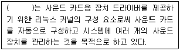
- ALSA
- XSANE
- SATA
- USB
(정답률: 80%)
44. 다음 중 리눅스 시스템과 윈도우 시스템 간에 프린터를 공유하기 위한 서비스로 알맞은 것은?
- Unix Printer
- LinePrinter
- Samba Printer
- JetDirect
(정답률: 78%)
45. 다음 설명에 해당하는 하드디스크 장치명으로 알맞은 것은?
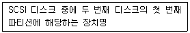
- hdb1
- hda1
- sdb1
- sda1
(정답률: 67%)
46. 다음 중 시스템에 장착된 장비 목록을 보여주는 명령어로 알맞은 것은?
- lsmod
- ps
- top
- lspci
(정답률: 66%)
47. 다음 중 seoul.txt 파일 내용을 인쇄하기 위한 명령으로 틀린 것은?
- cat seoul.txt < /dev/lp0
- lpr seoul.txt
- cat seoul.txt > /dev/lp0
- cat seoul.txt | lpr
(정답률: 55%)
48. 다음 중 출력 장치와 관련된 명령어로 틀린 것은?
- lpd
- scanimage
- alsactl
- lpstat
(정답률: 46%)
2과목: 리눅스 활용
49. X 클라이언트 프로그램에서 192.168.100.10의 첫 번째 실행된 X서버의 두 번째 모니터로 전송하고자 할 때 명령어로 옳은 것은?
- export DISPLAY="192.168.100.10:0.0"
- export DISPLAY="192.168.100.10:1.1"
- export DISPLAY="192.168.100.10:0.1"
- export DISPLAY="192.168.100.10:1.0“
(정답률: 73%)
50. 다음 중 X 윈도를 강제로 종료하기 위한 키 조합으로 알맞은 것은 ?
- <ctrl>-<alt>-<backspace>
- <crtl>-<alt>-<A>
- <alt>-<tab>
- <ctrl>-<alt>-<C>
(정답률: 56%)
51. 다음설명중( 괄호) 에들어갈내용으로알맞은것은?
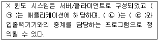
- ㉠ 서버 ㉡ 클라이언트 ㉢ 클라이언트
- ㉠ 클라이언트 ㉡ 서버 ㉢ 클라이언트
- ㉠ 서버 ㉡ 클라이언트 ㉢ 서버
- ㉠ 클라이언트 ㉡ 서버 ㉢ 서버
(정답률: 66%)
52. 다음 xhost 명령어 중에서 모든 클라이언트의 접속을 허용하는 명령으로 알맞은 것은?
- xhost +
- xhost -
- xhost *
- xhost all
(정답률: 51%)
53. 다음 중 KDE에 대한 설명으로 틀린 것은?
- 데스크톱 환경의 일종이다.
- Qt 라이브러리를 기반으로 만들어 졌다
- 리눅스뿐만 아니라 FreeBSD, Solaris, OS X등도 지원한다.
- Metacity라는 윈도우 매니저를 사용한다.
(정답률: 59%)
54. 다음 중 부팅 시에 X 윈도 실행과 관련된 런레벨로 알맞은 것은 ?
- 1
- 5
- 4
- 3
(정답률: 71%)
55. 다음 중 나머지 셋과 종류가 틀린 것은 ?
- GNOME
- KDE
- KWin
- Xfce
(정답률: 44%)
56. 다음 중 인텔 x86 계열의 유닉스 계열 운영체계에서 동작하는 X서버로 알맞은 것은?
- QT
- XFree86/Xorg
- GTK
- XView
(정답률: 68%)
57. 다음에서 설명하는 LAN 구성 방식으로 알맞은 것은?
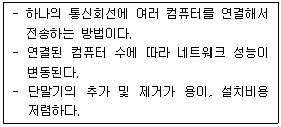
- 스타(Star)형
- 버스(Bus)형
- 링(Ring)형
- 망(Mesh)형
(정답률: 69%)
58. 다음에서 설명하는 것으로 알맞은 것은?
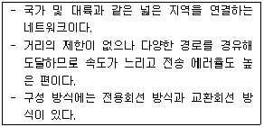
- LAN
- SAN
- MAN
- WAN
(정답률: 78%)
59. 다음에서 설명하는 네트워크 장비로 알맞은 것은?
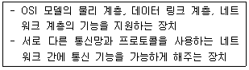
- 리피터
- 브리지
- 라우터
- X.25
(정답률: 73%)
60. 다음에서 설명하는 것으로 알맞은 것은?
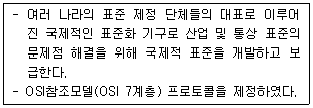
- IEEE
- ISO
- ANSI
- ITU-T
(정답률: 66%)
61. 다음 중 3-way handshaking의 패킷 교환 순서로 알맞은 것은?
- SYN → ACK/SYN → ACK
- ACK → ACK/SYN → SYN
- ACK/SYN → SYN → ACK
- ACK/SYN → ACK → SYN
(정답률: 65%)
62. 다음 중 IP주소의 클래스와 호스트 개수가 틀린 것은?
- A 클래스 : 16,777,216
- B 클래스 : 65,536
- C 클래스 : 256
- D 클래스 : 128
(정답률: 62%)
63. 다음 중 IPv6의 특징으로 틀린 것은?
- 호스트 주소 자동 설정
- 패킷 크기의 확장
- 헤더 구조 복잡성
- 흐름 제어 기능 지원
(정답률: 66%)
64. 다음에서 설명하는 것으로 알맞은 것은?
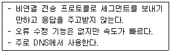
- TCP
- UDP
- IP
- ICMP
(정답률: 73%)
65. 다음 ( 괄호 )안에 들어갈 내용으로 알맞은 것은?
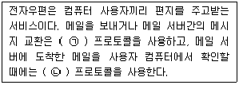
- ㉠ SMTP ㉡ IMAP
- ㉠ POP3 ㉡ SMTP
- ㉠ IMAP ㉡ SMTP
- ㉠ SNMP ㉡ POP3
(정답률: 61%)
66. 다음 중 www에 대한 설명으로 틀린 것은?
- URL과 HTML을 사용한다.
- 하이퍼텍스트 방식과 멀티미디어 환경에서 검색할 수 있는 정보 검색 시스템이다.
- HTTP 프로토콜 기반으로 운영된다.
- 고퍼(gopher)가 등장하면서 지금은 점점 사라지고 있다.
(정답률: 80%)
67. 다음에서 설명하는 명령으로 알맞은 것은?
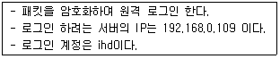
- ssh 192.168.0.109@ihd
- ssh 192.168.0.109 -l ihd
- telnet 192.168.0.109 ihd
- telnet -l ihd 192.168.0.109
(정답률: 44%)
68. 다음 중 SSH에 대한 설명으로 틀린 것은?
- anonymous(익명)라는 계정을 제공한다.
- 패스워드 없이 로그인이 가능하다.
- 원격 셸, 원격 복사, 원격 파일 전송도 지원한다.
- 서버-클라이언트 구성으로 서버에 접속하려면 클라이언트 프로그램이 설치되어야 한다.
(정답률: 48%)
69. 다음 중 FTP 명령어와 설명이 틀린 것은?
- bi : 파일 전송 모드를 바이너리 모드로 변경한다.
- ls : 디렉터리의 리스트를 출력한다.
- mget : 로컬시스템에 여러개의 파일을 가져온다.
- passive : 파일전송할때진행상태를"#"로표시한다.
(정답률: 63%)
70. www.ihd.or.kr 서버에서 190 포트로 접속하려 한다. 다음 중 ( 괄호 )안에 들어가는 옵션으로 알맞은 것은?
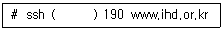
- -p
- -port
- --p
- --port
(정답률: 67%)
71. 다음 중 이더넷 카드에 네트워크 주소를 설정하기 위한 필수 요소로 틀린 것은?
- IP주소
- 넷마스크 주소
- DNS 주소
- 게이트웨이 주소
(정답률: 64%)
72. 네트워크 통신을 위해 네트워크 인터페이스를 설정하려 한다. 다음 중 설정 방법으로 틀린 것은?(문제 오류로 실제 시험에서는 정답이 1번 4번이 정답 처리 되었습니다. 여기서는 4번을 누르면 정답 처리 됩니다.)
- 명령 터미널에서 ipconfig, route 명령어를 이용해서 설정
- 명령 터미널에서 nm-connection-editor 명령 실행 후 나타나는 GUI에서 설정
- 명령 터미널에서 system-config-network 명령 실행 후 나타나는 텍스트 기반 유틸리티에서 설정
- /etc/init.d/network, /etc/hosts 파일을 vi편집기를 이용해 내용을 직접 변경해서 설정
(정답률: 70%)
73. 다음 중 ifconfig 명령어가 지원하는 기능으로 틀린 것은?
- 네트워크 인터페이스의 작동을 중지시킨다.
- 네트워크 인터페이스의 Link mode를 설정한다.
- 네트워크 인터페이스에 IP, Netmask, Broadcast값을 부여하고 활성화 시킨다.
- 네트워크 인터페이스의 Netmask값만 설정한다.
(정답률: 30%)
74. 다음 중 netstat 명령으로 확인할 수 있는 상태로 틀린 것은?
- ARP 캐시 정보
- 라우팅 테이블 정보
- 네트워크 인터페이스 상태
- 멀티캐스트 멤버 정보
(정답률: 39%)
75. 다음 중 DNS 설정과 가장 관련 있는 파일로 알맞은 것은?
- /etc/hosts
- /etc/resolv.conf
- /etc/sysconfig/network
- /etc/sysconfig/network-scripts/ifcfg-bond0
(정답률: 63%)
76. 다음 중 네트워크 관련 파일과 설명이 틀린 것은?
- /etc/resolv.conf : 네임 서버(DNS 서버)를 설정하는 파일
- /etc/services : 각 응용프로그램 및 프로토콜에 할당될 포트를 관리하는 파일
- /etc/hosts : IP주소와 호스트명을 매핑 시켜 데이터베이스처럼 사용하는 파일
- /etc/sysconfig/network : 네트워크 인터페이스 환경 설정과 관련된 파일들이 저장되어 있는 파일
(정답률: 35%)
77. 다음 중 고계산용 클러스터를 구성하는 요소로 가장 거리가 먼 것은?
- C Compiler
- PVM
- MPI
- LVS
(정답률: 43%)
78. 다음 중 임베디드 리눅스 활용분야로 가장 거리가 먼 것은?
- IVI
- 스마트TV
- 스마트폰
- Docker
(정답률: 67%)
79. 다음 설명에 해당하는 시스템으로 알맞은 것은?
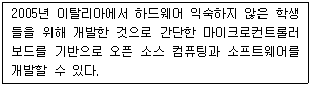
- 아두이노
- 라즈베리 파이
- 마이크로비트
- 큐비보드
(정답률: 65%)
80. 다음 설명으로 알맞은 것은?
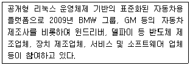
- 안드로이드
- 타이젠
- GENIVI
- QNX
(정답률: 58%)
"ls" 명령어는 현재 디렉토리에 있는 파일과 디렉토리의 목록을 보여주는 명령어입니다. 이때 "-l" 옵션을 사용하면 파일의 허가권(Permission)을 확인할 수 있습니다.
반면에 "chgrp", "chown", "chmod" 명령어는 파일의 허가권을 변경하는 명령어입니다. "chgrp"는 파일의 그룹 소유자를 변경하고, "chown"은 파일의 소유자를 변경합니다. "chmod"은 파일의 읽기, 쓰기, 실행 권한을 변경합니다.